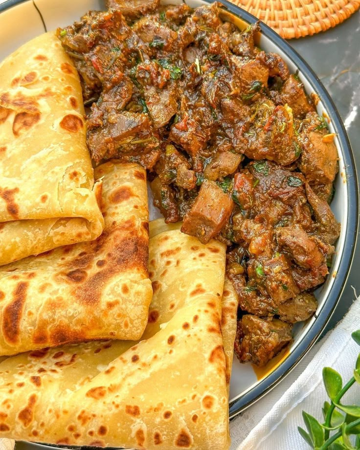

Chapati Recipe
Home

INGREDIENTS
- 3-4 cups of all purpose or wheat flour
- 1 to 3/4 cups
- 1 teaspoon of salt
- 1 tablespoon of sugar
- 3 tablespoons of cooking oil
INSTRUCTIONS
- ~Place 3 cups of flour and add salt in large bowl.
- ~Rub in the ghee, then gradually add the hot water, or enough to form a firm dough.
- ~Mix with a wooden spoon. If the dough is sticky, let it cool for 10 minutes.
- ~If using a stand mixer, use a dough hook and let it mix for 10 minutes.
- ~If kneading by hand, turn the dough on a well-flour surface and knead for 10 minutes until smooth.
- ~Should you notice that the dough is too sticky, add a little flour at a time until a firm dough form. Don’t add too much flour.
- ~Place the dough into a bowl and cover with a kitchen cloth or plastic wrap and set aside for one hour.
- ~Divide the dough into 14-16 ports and roll into 15 circles.
- ~Brush the rolled out chapati with melted ghee and form spiralled balls, repeat the process, then cover and let the oiled dough rest for 10 minutes.
- ~You can also roll the dough balls into a circle, cut each circle at the centre then roll tightly to form a cone shape, press each cone shaped ball down on the pointed top.
- ~Reroll the oiled dough balls into a 15 cm (5inches) circle.
- ~Head a thick bottomed pan or tawa on medium heat.
- ~Cook one chapati at a time, dry frying each side until brown bubbles appear, then brush each side with ghee, flattening the surface with a spoon or flipper until both sides are golden brown.
- ~Repeat this process with all chapatis, cooking each side for 15-20 seconds.
- ~Place the in a clean kitchen towel, inside a bowl and cover tightly with a lid. This step will keep your chapatis warm and soft.,/li>
- ~Serve with your favourite stew